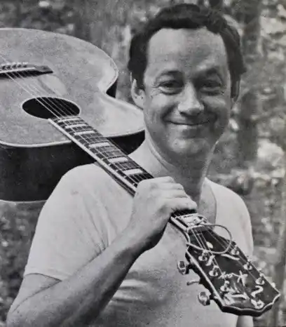

Джозеф К. Хікерсон — фолк-співак і пісень.
Народився 20 жовтня 1935 року в Гайленд-Парк, Іллінойс.
Випускник Оберлінського коледжу, протягом 35 років (1963–1998) він був бібліотекарем і директором Архіву народної пісні в Американському фольклорному центрі Бібліотеки Конгресу. Джо об'єднав українське джерело та власні вірші, щоб створити основу для "Куди поділись усі квіти?" у співпраці з Пітом Сігером. Він брав участь у записі першого лонгплею "Kumbayah". Разом із Дейвом Гардом йому приписують створення версії "Bonny Hielan Laddie" Kingston Trio. Він є лектором, дослідником і виконавцем, особливо в штатах Нью-Йорк, Мічиган і Чикаго. З 2013 року живе в Портленді, штат Орегон.